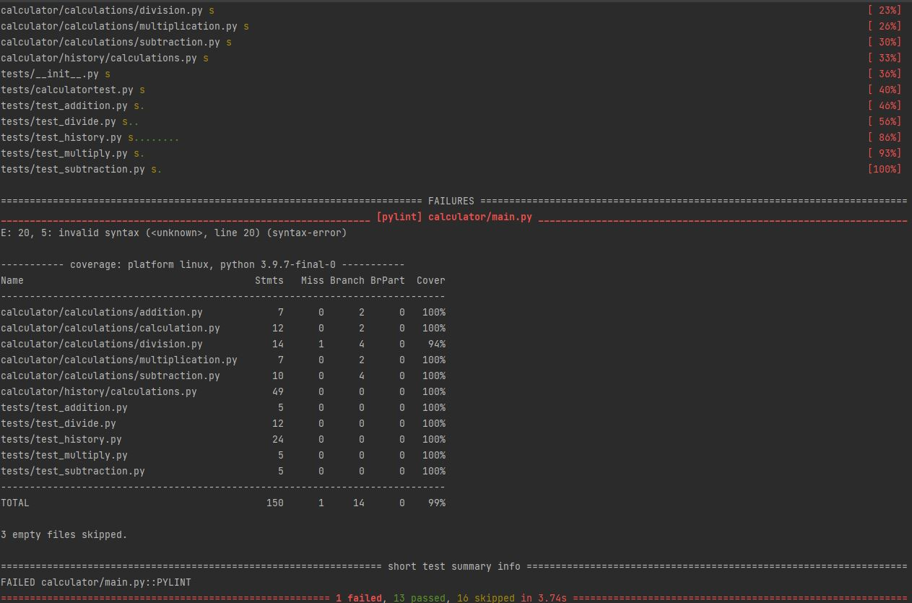

Introduction to Pylint
In this tutorial, you will get a basic understanding of Pylint and OOP terminologies
Pylint:
Pylint is a tool that can be imported and used to check for errors in python programs.
There are a few different ways to implement Pylint into your system. For this tutorial, you want to add a requirements.txt file to your project repository and run "pip install -r requirements.txt" in the terminal.

After successfully installing pylint, to use pylint you run the command "pytest --pylint --cov". This command will run pylint on every .py file in your project. It will return any errors found in any of your files and will tell you the type of error, line number, etc.
Object Oriented Programming Glossary:
Factory: An object for creating other objects
Object: a value in memory referenced by an identifier
Instantiation: Creation of an object
Class: abstract template for creating specific objects
Method: a function in OOP that performs an action
Property: fields of objects/classes with dedicated getter/setter routines
Namespace: declarative region that provides a scope to the identifiers inside of it
Constructor: allows you to initialize an object's properties when creating an object
Fixture: A known state against which a test is running
Type Hint: providing hints to function to only accept the given data type
Type Cast: The product of class inheritance
Unit Test: Testing all methods and functions of a program to ensure that they work in isolation
Static: Functions that provide functionality related to an a particular class without requiring the programmer to first create an instance of that class